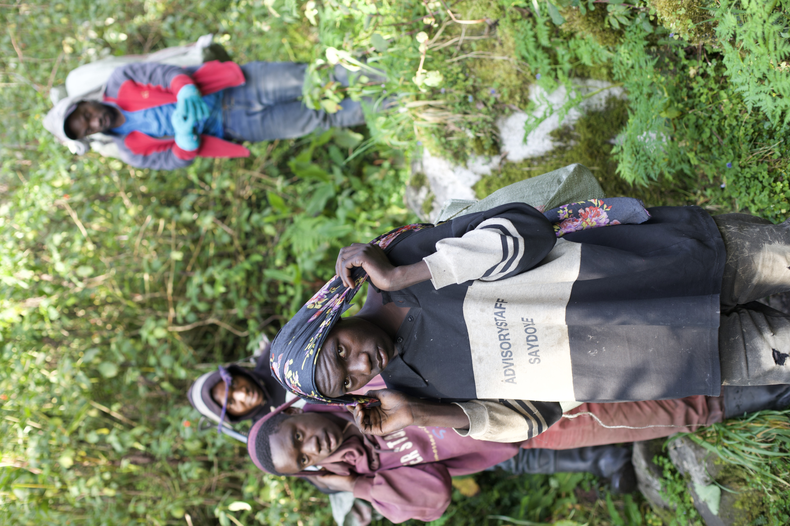

Rwenzori Preservation Society
Ekitunga Ekikalinda Omusithu we Rwenzori


About
Ekitunga Ekikalinda Omusithu we Rwenzori, roughly translated as Rwenzori Preservation Society, was formed in 2025 by a team of mountain porters to protect the Rwenzori Mountains National Park shared by the countries of Uganda and The Democratic Republic of the Congo. As one of the least explored mountaineering destinations in the world, the Rwenzori Mountains continue to reflect the unspoiled character and beauty that drew Prince Luigi de Amedeo, the Duke of Abruzzi, to make the first ascents of the Rwenzori's six major peaks.
People
Ekitunga Ekikalinda Omusithu we Rwenzori is an organization created and lead by the mountain porters of the Rwenzori Mountains. The porters, who spend more time in the Rweenzoris than any other grou, are the ideal stewards of the park. Their familiarity with the park's wildlife, terrain, and history make them uniquely qualified to preserve the park for future generations. The founding members of the Rwenzori Preservation Society are:
Porters
Mumbere Asheli
Mumbere has been a porter for XX years. He lives in XX. He started as a porter because YYY i.e. his father/brother/mother/sister work for the RMS? are guides? He loves ZZZ.
Thembo Jonus
Thembo has been a porter for XX years. He lives in XX. He started as a porter because YYY i.e. his father/brother/mother/sister work for the RMS? are guides? He loves ZZZ.
Thembo Boaz
Thembo has been a porter for XX years. He lives in XX. He started as a porter because YYY i.e. his father/brother/mother/sister work for the RMS? are guides? He loves ZZZ.
Baluku Joachim
Baluku has been a porter for XX years. He lives in XX. He started as a porter because YYY i.e. his father/brother/mother/sister work for the RMS? are guides? He loves ZZZ.
Mumbere Aaron
Mumbere has been a porter for XX years. He lives in XX. He started as a porter because YYY i.e. his father/brother/mother/sister work for the RMS? are guides? He loves ZZZ.
Marahi Cosmas
Marahi has been a porter for XX years. He lives in XX. He started as a porter because YYY i.e. his father/brother/mother/sister work for the RMS? are guides? He loves ZZZ.

Bwambale Josephat
Thembo has been a porter for XX years. He lives in XX. He started as a porter because YYY i.e. his father/brother/mother/sister work for the RMS? are guides? He loves ZZZ.
Kule Xavier
Kule has been a porter for XX years. He lives in XX. He started as a porter because YYY i.e. his father/brother/mother/sister work for the RMS? are guides? He loves ZZZ.
Masareka Godwin
Masareka has been a porter for XX years. He lives in XX. He started as a porter because YYY i.e. his father/brother/mother/sister work for the RMS? are guides? He loves ZZZ.
Mumbere Phillip
Mumbere has been a porter for XX years. He lives in XX. He started as a porter because YYY i.e. his father/brother/mother/sister work for the RMS? are guides? He loves ZZZ.
Fabiano Bakamwegha
Fabiano has been a porter for XX years. He lives in XX. He started as a porter because YYY i.e. his father/brother/mother/sister work for the RMS? are guides? He loves ZZZ.
Mumbere Arnest
Mumbere has been a porter for XX years. He lives in XX. He started as a porter because YYY i.e. his father/brother/mother/sister work for the RMS? are guides? He loves ZZZ.
Mentors
Bwambale Rogers
Bwambale has been a mountain guide for XX years. He lives in XX. He started as a porter because YYY i.e. his father/brother/mother/sister work for the RMS? are guides? He loves ZZZ.
Baluku Denis Limbali
Denis has been a porter for XX years. He lives in XX. He started as a porter because YYY i.e. his father/brother/mother/sister work for the RMS? are guides? He loves ZZZ. He is a trustee of Rwenzori Mountaineering Services.
Support Staff and Volunteers
Gerard, Ronald, and Chris
Gerard, Ronald, and Chris have supported Ekitunga Ekikalinda Omusithu we Rwenzori since its founding. Gerard, an experienced guide for the National Outdoor Leadership School lives in Northern Uganda and enjoys cycling, photography, and animal husbandry textbooks when he's not in the mountains. Ronald, a long-time endurance athlete from Kampala and member of the Ugandan chapter of the Mountain Slayers, can be found making very important work phone calls from 5100m using his satellite phone. Chris fell in love with the Rwenzoris and the people of the Rwenzoris on his last mountaineering expedition and feels privileged to support the Rwenzori Preservation Society however he can.
Projects
Refuse Collection and Recycling
The porters of Ekitunga Ekikalinda Omusithu we Rwenzori have pledged to document their refuse collection and recycling efforts while on expedition in the mountains. Each kilogram of collected refuse is brought off the mountain and verified by Bwambale Rogers and Baluku Denis Limbali. These collection amounts are then validated by the support staff, and a small stipend based on the weight and piece-count of the collected refuse is paid directly via electronic remittance to the members for their efforts.
Contact
To donate, volunteer, or learn more about the Rwenzori Preservation Society, please contact us at: